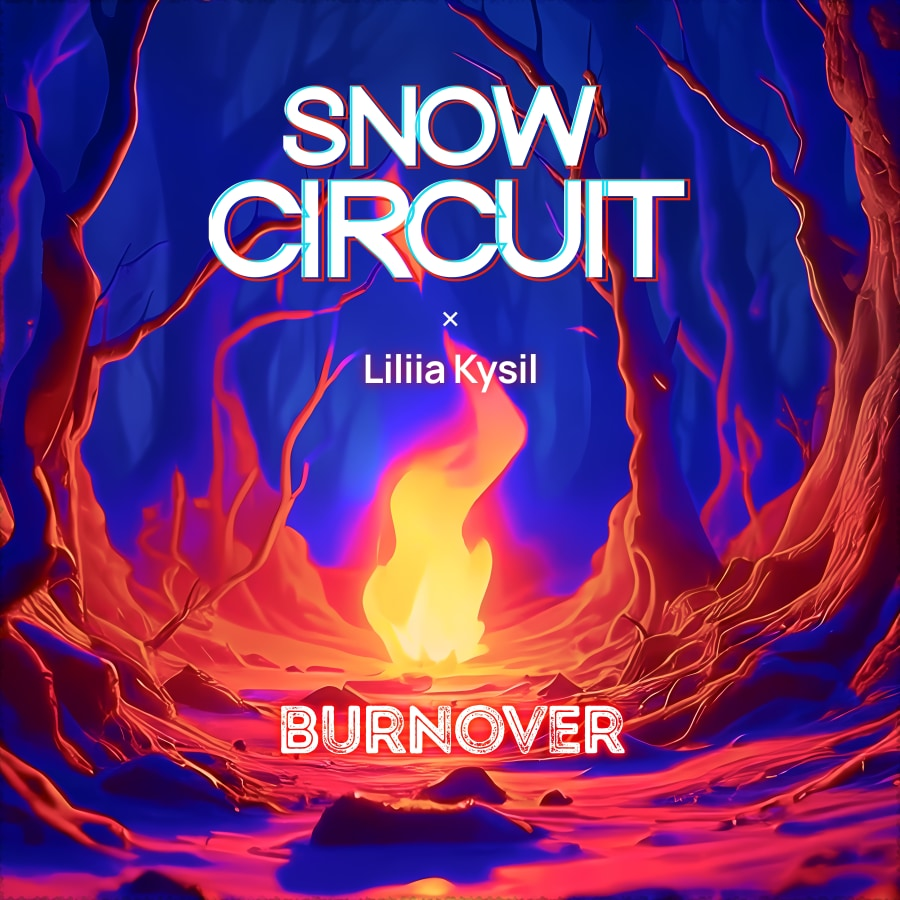

Snow Circuit is a retro synthwave act by Berlin-based French-Nepalese artist Félix Satyal. Dark, melancholic and sometimes hopeful, Snow Circuit brings elements of rock and metal to an 80s-inspired synth-driven sound.
Latest Release
A psychological thriller in synthwave form, featuring Liliia Kysil
Listen now
Listen to Snow Circuit on your favourite music streaming and discovery platform


Other singles
Listen to and download other Snow Circuit singles on Bandcamp